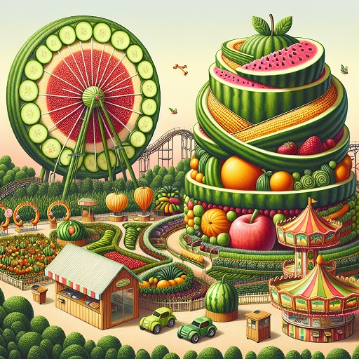
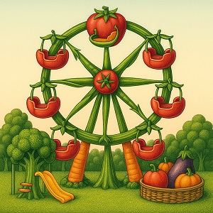
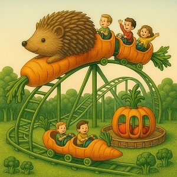
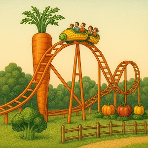

Navigáció
Bemutatkozás
Üdvözöljük a Zöldségvilágban, ahol a természet és a szórakozás találkozik! Vidámparkunkban minden attrakció különböző zöldségekből készült, így garantálva egyedülálló élményt. Akár az óriás uborka óriáskerék, a sárgarépa hullámvasút vagy a brokkoli játszótér, nálunk minden generáció megtalálja a számára legszórakoztatóbb programot. Célunk, hogy a látogatók jól érezzék magukat, miközben az egészséges étkezés fontosságára is felhívjuk a figyelmet. Fedezze fel a Zöldségvilág varázsát, és élvezze a friss levegőt, a nevetést és a természet csodáit!
Áraink
| Megnevezés | Ár |
|---|---|
| Gyerek jegy | $4000 |
| Diák jegy | $2500 |
| Felnőtt jegy | $2000 |
Galéria

Leghíresebb játékaink


